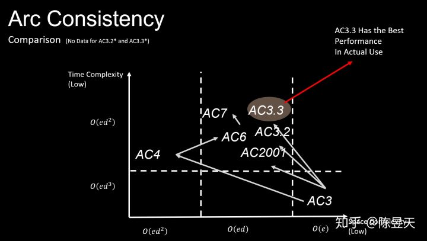
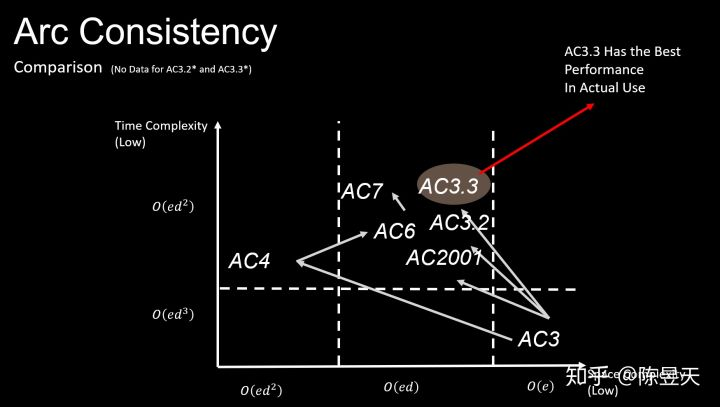
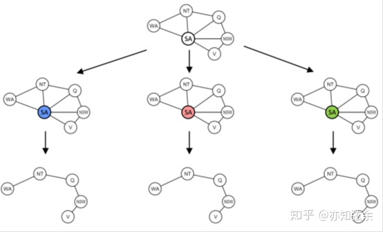
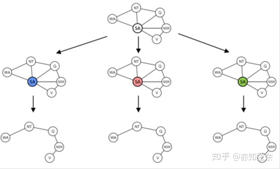
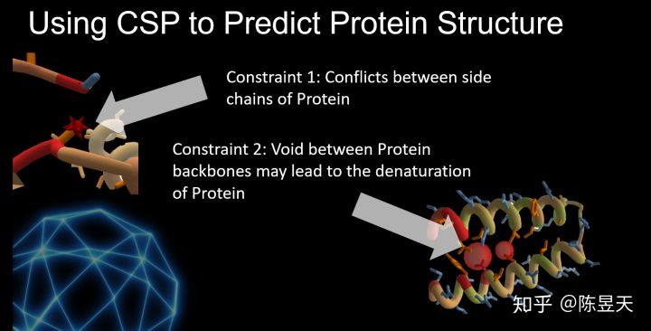
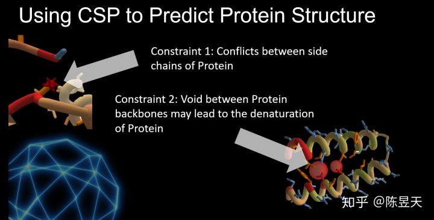

CS188 CSP - 约束满足问题
Ad astra per aspera
Part I What is CSP
CSP: 约束满足问题
- 一个CSP问题由三个主要部分组成： 变量，约束与值域，任何一个CSP问题都可以正则化为这三个集合
- CSP 问题是Search Problem的一个较为特殊的子集，不难发现，我们完全可以使用Breath First Search, Depth First Search 或者其他一般的搜索方法解决CSP问题。然而，由于CSP问题中的约束要求的复杂性，大量的变量空间和有时无穷大的状态空间，使用这些传统算法解决CSP问题不但会占用大量的计算时间，使用的内存消耗也会非常高。
- 目前大家普遍认为CSP问题是一种NP-Complete问题，也就是说一般普遍认为没有普适的，能够在多项式时间内解决CSP问题的算法存在
Part II Backtracking
- 目前所有的解决CSP问题的算法的根本原理都是基于“回溯算法”，这种方法是一种完备的，可以解决任何有解的CSP问题的算法。然而，为了提高解决速度，目前普遍使用的工具都会集成一些启发式方法和局部搜索方法
- 这种方法通过尽可能的保证已赋值的变量不改变赋值来最大化解决问题的速度
Part III Arc Consistency Algorithm
- 为了简化CSP问题，人们提出了很多种CSP约束传播算法；这些算法有以下两个主要功能：
- 验证CSP是否有解，注意任何单一的CSP约束传播算法都不能证明CSP有解，但是可以证明CSP问题无解
- 简化CSP模型，通过检测变量间的约束来减少每一个变量的可取值值域
在这些算法中检测CSP问题中的Arc-Consistency的AC系列及其延伸算法被的研究最多，因为一般研究Arc Consistency时发现的算法可以有效的推广到更高等级的Path-Consistency 和 k-consistency 问题上，而且Arc Consistency 问题相对容易解决
AC3
- 在AC系列中，第一个被提出并且广为接受的算法是AC3（AC1 和 AC2 在作者的论文中也有呈现，但是仅仅是作为迭代出AC3的步骤存在）AC3通过寻找一个变量的某个赋值是否能与周边的变量相容（不威胁约束）来减小值域，当找不到能够使得这个赋值与周边变量相容的情况时，从变量的值域中删去这一变量
AC4
- AC4算法是一种非常激进的算法，使用了非常多的方法试图降低时间复杂度
- AC4算法致力于降低AC3的时间复杂度，使用了以空间换时间的策略，AC4通过大量的存储来降低时间复杂度
AC4算法会使用一个二位数组来存储两个变量之间的约束可以支持这两个变量取什么值，通过这些存储，AC4可以避免重复检查变量间的约束关系
AC4 算法的时间复杂度是最佳的
- 然而，AC4算法的初始化非常耗时，而且其空间复杂度非常高昂，这使得它与AC3对比并没有理论上预测的巨大优势
- AC4算法也是AC系列的第一个“细粒度算法”，也就是说它的约束检测是基于变量的取值，而非基于变量间的弧约束，这可以避免一些重复的约束检测
AC6
- AC6算法意在保持AC4的最坏情况时间复杂度的同时降低空间复杂度的开销，并且像AC3一样，当遇到第一个满足Arc Consistency的赋值方法是就停止寻找其他方法
AC7
- AC7通过利用弧约束的双向性来进一步简化约束满足过程
AC2001
- AC2001 是一个粗粒度的算法，也就是说它对约束的检测是基于两个变量之间的约束进行的，这样的算法更为轻量而且更加容易维护，AC2001通过使用指针存储每个约束上的最低满足限度的支持约束的赋值来运行（而不是像AC6，使用二维数组，因此它的空间占用实际上比AC6低一些）
- AC2001是第一种达到最优复杂度的粗粒度算法
AC3.3
- AC3.3是人们基于AC3的基本架构，增加了对弧约束的双向性支持得到的算法，在日常情况中，AC3.3一般拥有最好的实际表现
AC 算法的时间复杂度与版本树总结
 
Part IV Other Methods for CSP[^1 ]
*以下基于一个只有二元约束的CSP图（任意多元CSP问题都可以被转化为二元CSP问题）
启发式算法解决CSP问题
简而概之，使用启发式算法解决CSP问题的一种常用启发式算法是“找到威胁弧相容性最多的变量，在不改变其他任何变量的条件下，将一个在变量值域内的，威胁弧相容性最少的值赋给这个变量”，通过重复这个操作达到找到一个CSP完整的，满足相容性的解集
局部搜索方法解决CSP问题
结构优化法解决CSP问题
 
树形的CSP约束问题可以在线性时间内解决，（例如使用“拓补排序”方法）将树线性化；一种CSP解决方法是割集条件设置，这种方法通过去掉图中产生环的关键节点来将有环的CSP约束图转化为若干个无环的CSP约束图，然后将每一个无环的CSP解加上之前删掉的关键节点后再次求解
Part V CSP问题在实际生活中的应用例子
使用CSP求解器预测蛋白质折叠结构
蛋白折叠结构问题 - 使用CSP正则化
变量：蛋白质中每个基团的方向 / 位置（三维向量）
约束：
- 蛋白质侧链之间的静电力 / 洛伦兹力 / 亲（疏）水性
- 空间结构不可重叠（一个位置不能有两个原子） *如下图所示
- 蛋白质的激活位置 / 活性位置不能太大，不然无法实现酶催化的专一性 *如下图所示
 
值域：三维空间内（可以离散化三维空间，使其转化为有限值域的CSP问题）
发布于 01-11